Now… this is the ninth and last circle…. Which makes me a little emotional and tear-eyed because we are reaching the end of the Inferno tour :( and I’ll have to drug y’all… I mean… what?
Anyways as you can see… this lake is called Cocytus, which is basically just a giant… frozen lake… with frozen souls of course….
There’s four different rings in this circle: Caina, Antenora, Ptolomea, and Judecca. These circles basically just freeze your soul <3

...Anyways…. Let’s travel down this river…. Oh the name of this river? UHm…… something like the river of forgetfulness….. Why’s that?.... Oh…. because…...